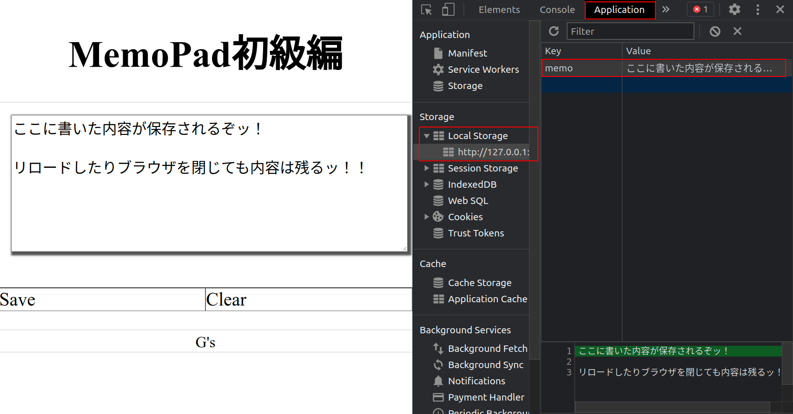

LocalStorage（メモ帳初級）
LocalStorageとは
変数やオブジェクトの問題
- ブラウザをリロードすると初期化される．
- 次回読み込んだときまで値を保存したいときにつらい！
LocalStorageができること
- ブラウザにデータを保存できる！
- テキスト形式のデータのみ．
- 「オリジン単位」ごとに5MBまで保存できる．
- （自分で削除しないと永続的に保存される）
オリジン単位とは「http://www.example.com:80」のような「プロトコル://ドメイン名:ポート番号」のこと．
参考: https://gihyo.jp/dev/serial/01/javascript-security/0004?page=2
本日実装するアプリケーション
メモ帳をつくろう！
- ブラウザ上のテキストエリアにメモを入力．
- ブラウザに情報を保存．
- リロードしても情報が保存されるようにする．
仕様
- saveボタンをクリックしたら情報を保存．
- clearボタンをクリックしたら情報を削除．
- リロード時に情報が保存されていれば自動的に表示．
完成イメージ
LocalStorageの内容は検証画面から確認できる．
「Application」 -> 「LocalStorage」の順にクリックすると確認できる（下図の赤枠部分）．

LocalStorageの使い方
しくみ
「key」と「value」の形式でデータを保存する．key名を変えれば複数保存できるッ！
| key | value |
|---|---|
| memo01 | コード！書かずにはいられないッ！ |
| memo02 | 最終的に．．．動けばよかろうなのだァァァァッ！！ |
| memo03 | 過程や！方法なぞ！どうでもよいのだァーッ |
JavaScriptでの扱い方
今回はデータの登録（すでに同じkeyが存在する場合は上書き）とデータの取得を扱う．
| 内容 | JavaScriptの書き方 |
|---|---|
| データ登録 | localStorage.setItem(key, value); |
| データ取得 | localStorage.getItem(key); |
| データ更新 | localStorage.setItem(key, value); |
| データ削除 | localStorage.removeItem(key); |
| データ全削除 | localStorage.clear(); |
| データの長さ | localStorage.length; |
| データの順番 | localStorage.key(インデックス); |
メモ帳に必要な処理
1. データを保存するときの処理
- saveボタンのクリックでイベント発火．
- テキストエリアの情報を取得．
- LocalStorageに情報を保存．
2. データを削除するときの処理
- clearボタンクリックでイベント発火．
- LocalStorageの情報を消去．
- 画面上の入力欄をクリア．
3. データを取得するときの処理
- 読み込み時にLocalStorageのデータ有無を確認．
- 保存されていれば情報を取得．
- テキストエリアに情報を表示．
データを保存するときの処理
- saveボタンのクリックでイベント発火．
.val()でテキストエリアの情報を取得．localStorage.setItem()でLocalStorageに情報を保存．
// memo01.html
$('#save').on('click', function () {
const text = $('#text_area').val();
localStorage.setItem('memo', text);
});
💡 Key Point
「localStorage」は手打ちせず補完に頼る！！
データを削除するときの処理
- clearボタンクリックでイベント発火．
- key名を指定してLocalStorageの情報を消去．
- 画面上の入力欄をクリア（空文字で上書きする）．
// memo01.html
$('#clear').on('click', function () {
localStorage.removeItem('memo');
$('#text_area').val('');
});
「
.val()」は()内に何か入れると入れた値で上書きする！
データを取得するときの処理
- 読み込み時に条件分岐を用いてLocalStorageのデータ有無を確認．
- 保存されていれば情報を取得．
- テキストエリアに情報を表示．
// memo01.html
if (localStorage.getItem('memo')) {
const text = localStorage.getItem('memo');
$('#text_area').val(text);
}
データがないのに処理しようとするとエラーになってしまう．データがないときは何もしない．
練習
memo01.htmlに以下の処理を順番に実装しよう．
- saveボタンクリック時にデータの保存
- clearボタンクリック時にデータの消去
- 読み込み時にデータの取得
LocalStorageの中身は検証画面から確認しよう．それぞれ以下の状態になればOK！
- 保存時にデータが保存され，検証画面から確認できる．
- 消去時に保存してあるデータが消去される．
- リロード時に保存しているデータがあれば画面に表示される．